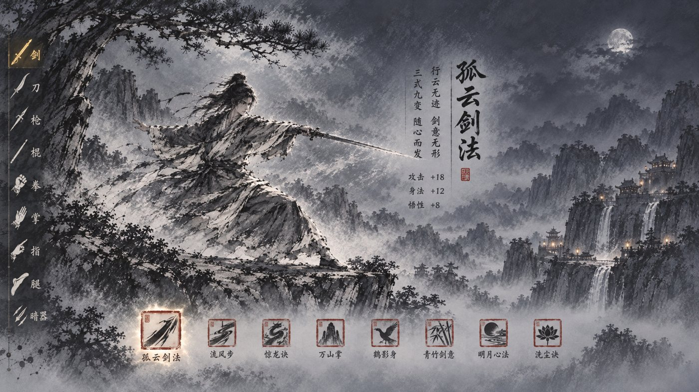
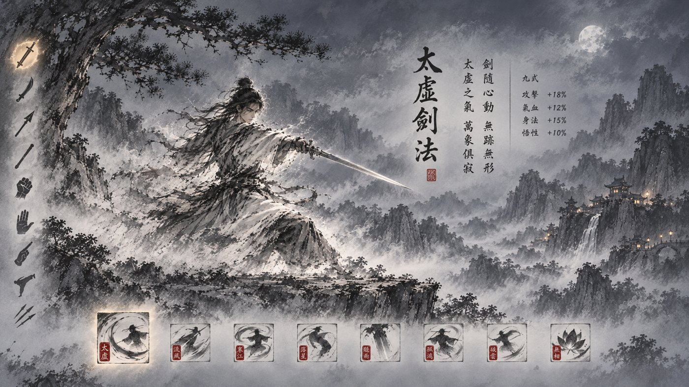
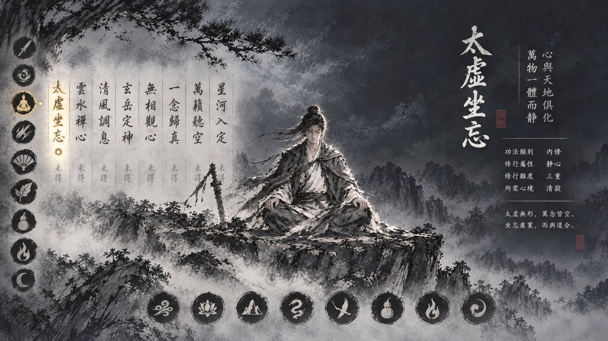
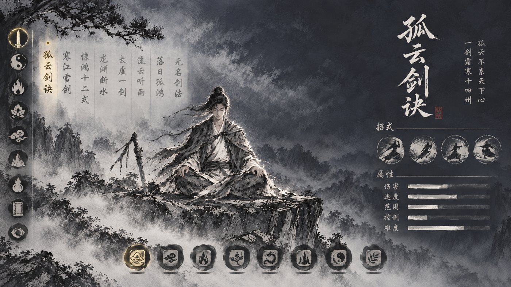
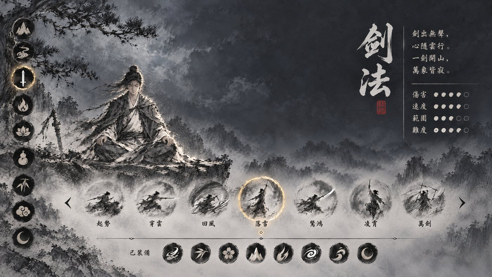
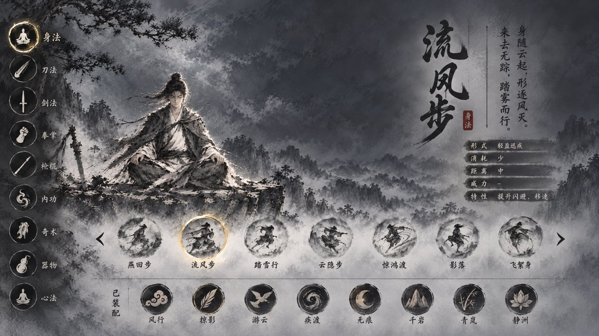
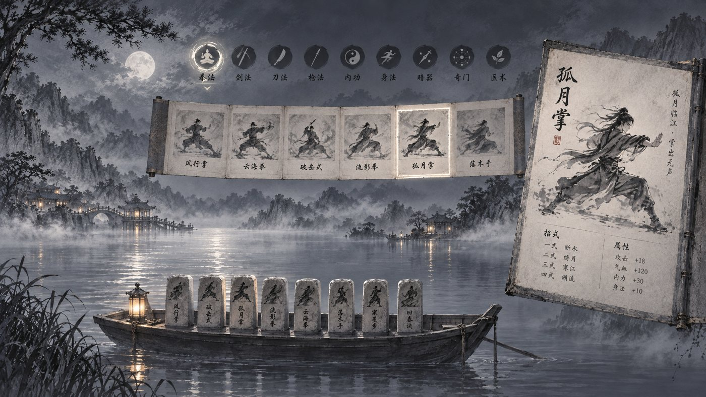
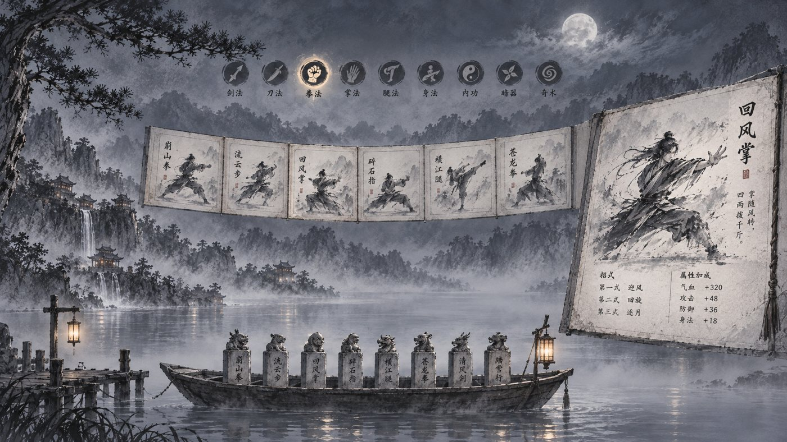
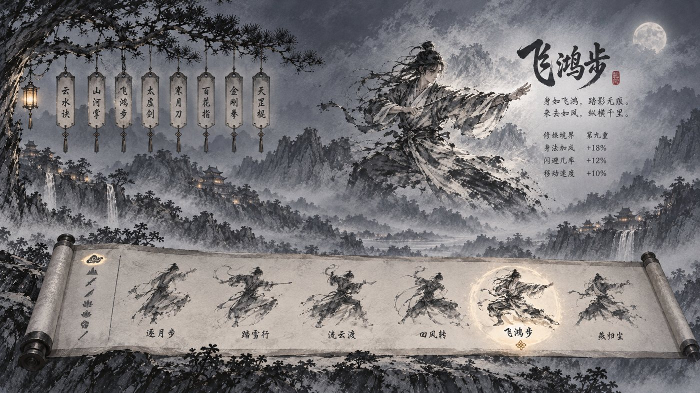
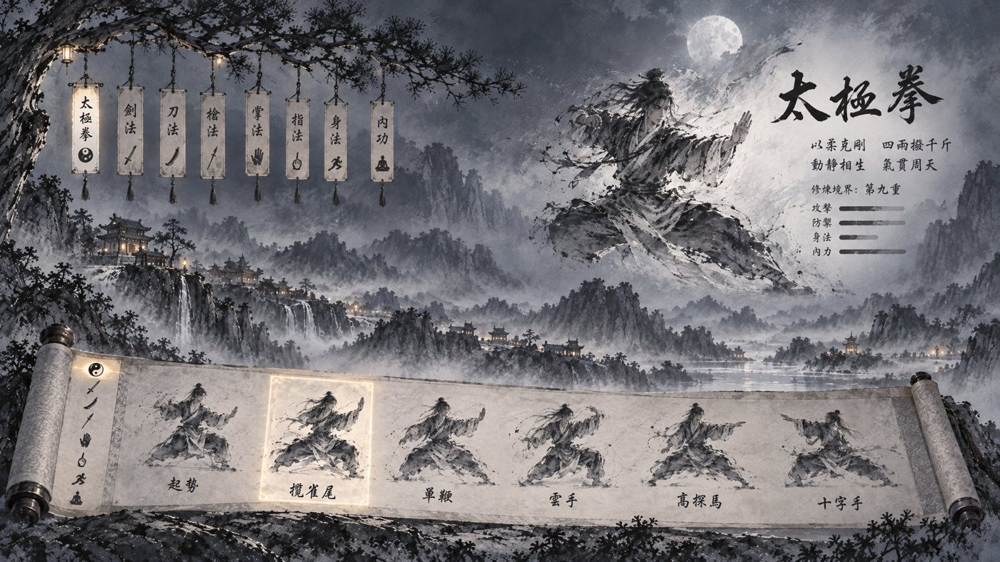

只按三件事出图：分类别、看一门详情、装配。风格参考修炼、前尘与已重绘的据点场景三张图，每个方向各两张。图中文字与数值为 AI 随手画。
| 底图 | 亮度 | 浓墨% | 饱和% | 颗粒 |
|---|---|---|---|---|
| 修炼 / 前尘（参照） | 86 / 108 | 6 / 5 | 10 / 6 | 8.6 / 14.2 |
| 甲 | 107–124 | 4–8 | 6–8 | 13.3–13.5 |
| 乙 | 103–115 | 6–8 | 9–10 | 10.8–12.0 |
| 丙 | 116–118 | 9 | 8–9 | 14.4–14.7 |


左缘一列类别墨笔图标；画中央是一位大幅墨像在演选中这门武学；旁边像修炼页那样把名字、口诀、各式与数值直接题在画上；下沿一排方印是装配位。
与修炼页同一套语言（画即人、字题在画上），画面最干净。缺口：这一类有哪些武学没处放——装配栏只放已装的，选书需要在类别图标旁再展开一列名字（例如悬停或点击类别时从左缘展开一列竖签）。
甲一 · 目录竖写：类别图标右侧，像古书目录页一样竖写这一类各门武学的名字，选中的一门金字带点，未得的淡灰；点名字即在中央换像、右边换题跋。


只用字，最省画面、最像书；一屏竖排约十门，多了左右翻。
甲二 · 圆画一条：装配印上方浮一条圆形小画，每幅一门的招式像与名字，选中的一圈金线，两端箭头翻页；最下仍是「已装配」一排印。


每门都有像，一眼认得出；但下方两排圆（藏书 + 装配）挨着，容易混。
这四张 AI 把人像画成了打坐、类别图标也画走了样，原型里人像按类别换演武墨像、类别图标用已画好的那套，只看藏书怎么放。


上方一排圆形类别图标；下面一条横展的册页，每页画这一类的一门武学；右侧放大一页是选中那门的详情；湖上一只小舟载着一排石印，即装配。
三件事都在画上、各占一块，一目了然；册页一页一门，翻页就能放下几十门。小舟、册页、大页三样器物同时出现，元素比甲多。


下方展开一卷手卷：卷首一列类别图标，卷上依次画这一类各门武学，选中的一门亮起；右上天空写选中那门的大像、名字与详情；左上松枝下挂一排竖签，即装配。
手卷横向能放下很多门、可左右拖，最像「翻一本武学谱」；但悬签和机缘页的挂签语汇有些重复。